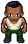

Preparando uma cidade totalmente nova...
Um novo motor em JavaScript. Personagens, edifícios e texturas do seu projeto original — um mapa inteiramente reconstruído.

Aparências já vestidas com sprites originais. A personalização de roupas em camadas virá depois.
Seu progresso fica salvo neste dispositivo.